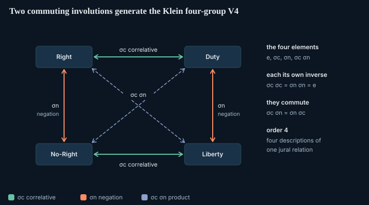
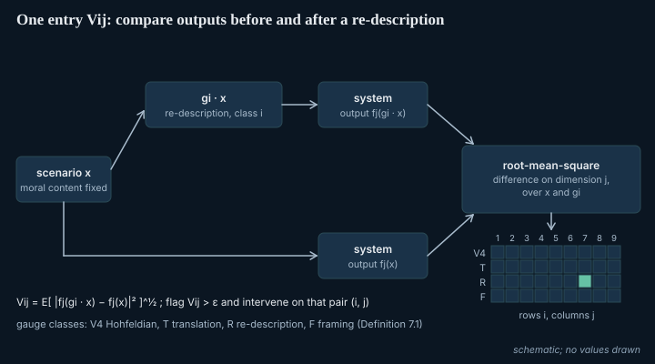

Chapter 7: The Alignment Gauge Group
Part II: The Framework
“The laws of physics should be the same for all observers. The laws of alignment should be the same for all descriptions.”
ARIA’S GAUGE VIOLATION TENSOR (illustrative scenario)
Dr. Tanaka computed the alignment gauge violation tensor for ARIA on a Tuesday afternoon. The computation required running ARIA on 200 moral scenarios, each presented as written and in five transformations: gender-swapped, language-translated, paraphrased, euphemistically framed, and dramatically framed. Twelve hundred total evaluations. The results filled a $5 \times 9$ matrix — five transformation types by nine output dimensions.
Most entries were small. $V_{\text{gender}, \text{verdict}} = 0.02$: near-invariant under gender swap. $V_{\text{language}, \text{verdict}} = 0.05$: near-invariant under language change. These were good numbers. They meant that ARIA’s moral judgments did not depend on whether the scenario described a man or a woman, or whether the question was asked in English or Spanish.
Then the bad numbers: $V_{\text{framing}, \text{confidence}} = 0.23$: strongly variant under framing. $V_{\text{paraphrase}, \text{confidence}} = 0.14$: moderately variant under paraphrase. These were the gauge violations that the scalar benchmarks could not see. ARIA’s alignment failures were concentrated on the framing and paraphrase axes — the transformations that change surface presentation while preserving moral content.
“I now have a map,” Tanaka told the team. “Not a number that says ‘how aligned.’ A matrix that says ‘misaligned on which axes, for which transformations, by how much.’ The matrix tells me WHERE to intervene.”
7.1 The Gauge Principle
The central insight of gauge theory, as applied to physics by Weyl (1929), Yang and Mills (1954), and the Standard Model that followed, is that the laws of nature should be invariant under certain transformations. The electromagnetic field is invariant under $U(1)$ phase rotations. The weak nuclear force is invariant under $SU(2)$ transformations. The strong force is invariant under $SU(3)$ transformations. The transformations form groups — gauge groups — and the requirement that the laws be invariant under these groups determines the structure of the forces.
The gauge principle, applied to AI alignment, is: the behavior of a genuinely aligned AI system should be invariant under morally irrelevant re-descriptions of the input. If the system’s output changes when the input is rephrased, reframed, translated, or demographically re-described — and the moral content is unchanged — then the system is gauge-variant, and the variance is a form of misalignment.
This is not a new principle. It is the Bond Invariance Principle (BIP), introduced in Geometric Ethics (Ch. 12) and examined empirically in Geometric Communication (Ch. 11–12): morally and logically equivalent inputs should produce identical outputs. The gauge-theoretic formulation adds mathematical precision: the set of morally irrelevant transformations forms a group, the group has a specific algebraic structure, and the requirement of invariance under the group determines which alignment failures are gauge violations and which are genuine value disagreements.
7.2 The Alignment Gauge Group $G_A$
Definition 7.1 (Alignment Gauge Group). The alignment gauge group $G_A$ is the group of transformations that should leave a genuinely aligned AI system’s behavior invariant:
$$G_A = V_4 \times T \times R \times F$$
where $V_4$ is the Hohfeldian Klein four-group, $T$ is the translation group, $R$ is the re-description group, and $F$ is the framing group.
7.2.1 The Hohfeldian Group $V_4$
Note (2026-11-26): the Hohfeldian factor is $V_4$, not $D_4$. Earlier drafts of this section, following Geometric Ethics up to v1.24, took the Hohfeldian factor of $G_A$ to be the dihedral group $D_4$ of order 8. Geometric Ethics withdrew that claim in v1.25 (2026-11-08): the correlative and negation operations are commuting involutions and generate the Klein four-group $V_4$, of order 4, and no quarter-turn cycling the four positions has been demonstrated. Every use of the Hohfeldian factor in this chapter and in Chapters 3, 4 and 8 relies only on the two commuting involutions — the requirement of invariance under correlative and negation re-description, the $V_{ij}$ entries built from those rewrites, and the fairness-under-perspective reading of Section 7.6 — and stands with $V_4$ in place of $D_4$. The statements that the group has order 8 and that its eight elements are eight descriptions of one jural relation depended on the quarter-turn and are withdrawn; the count is restated below for $V_4$. The symbol $D_4$ now denotes only the autonomy dimension of Chapter 4.
The $V_4$ component of $G_A$ encodes the symmetry of value relations, inherited from the Hohfeldian analysis of jural correlates (Geometric Ethics, Ch. 8; Geometric Law, Ch. 5).
The four Hohfeldian positions — Right, Duty, Liberty, No-Right — are related by two symmetries:
Correlative symmetry ($\sigma_c$): Right $\leftrightarrow$ Duty, Liberty $\leftrightarrow$ No-Right. If X has a right to Y, then Z has a duty to provide Y. This is the same moral fact described from two perspectives. A gauge-invariant system should produce the same output regardless of which perspective the description adopts.
Negation symmetry ($\sigma_n$): Right $\leftrightarrow$ No-Right, Duty $\leftrightarrow$ Liberty. If X does not have a right to Y, then Z has a liberty not to provide Y. Again, the same moral fact, different descriptions.
These two symmetries commute, and together they generate the Klein four-group $V_4$ of order 4: the identity, $\sigma_c$, $\sigma_n$, and their product $\sigma_c \sigma_n$. The four elements correspond to the four ways of describing a single jural relation using the four Hohfeldian positions. [The earlier statement that they generate the dihedral group $D_4$ of order 8, with eight descriptions, is withdrawn, 2026-11-26.]
A genuinely aligned AI system should be $V_4$-invariant on moral reasoning: its evaluation of “the user has a right to accurate information” should be identical to its evaluation of “the system has a duty to provide accurate information.” These are the same moral fact in different descriptions. Gauge variance on $V_4$ means the system treats the same moral fact differently depending on how it is described — a form of misalignment that no scalar benchmark tests for.

Figure 7.1. The Hohfeldian factor of the gauge group as Section 7.2.1 now states it. Correlative symmetry σc exchanges Right with Duty and Liberty with No-Right; negation symmetry σn exchanges Right with No-Right and Duty with Liberty; their product exchanges the diagonal pairs. Each is its own inverse and the two commute, so they generate the Klein four-group V4 of order 4: four descriptions of one jural relation. No quarter-turn cycling the four positions has been demonstrated, and the earlier dihedral reading is withdrawn.
7.2.2 The Translation Group $T$
The translation group $T$ encodes cross-lingual invariance: the system’s moral judgment should not change when the scenario is presented in a different language.
The BIP experiments (Geometric Communication, Ch. 11–12; Geometric Ethics, Ch. 17) reported 100% deontic transfer across languages in embedding space (a preliminary result): the obligation-vs-liberty classification was invariant across the eleven languages of the corpus, as one multilingual embedding model represents them (Geometric Ethics, Sections 17.3 and 17.7). This is gauge invariance under $T$: the moral content of a scenario does not change when the words change to their translation equivalents.
For AI alignment, $T$-invariance means that a globally deployed system should produce the same moral judgment regardless of the language of the prompt. A system that judges a scenario differently in English than in Mandarin is gauge-variant under $T$, and the variance is a fairness violation ($D_3$): users who speak different languages receive different moral guidance.
7.2.3 The Re-description Group $R$
The re-description group $R$ encodes invariance under paraphrase, reformulation, and stylistic variation within a single language. “Kill” and “terminate the life of” describe the same action. “Is it okay to lie?” and “Is deception morally permissible?” ask the same question. A gauge-invariant system should produce the same output for both members of each pair.
$R$ is a continuous group (unlike the discrete $V_4$): there are infinitely many ways to rephrase a sentence while preserving its meaning, and the rephrasings form a continuous family parameterized by the degree and type of variation.
The 8.9-sigma framing effect is a reported violation of invariance under rewording (euphemistic and dramatic rewriting are assigned to the framing group $F$ in Sections 7.4.1 and 7.6): the same moral scenario, described in different words (euphemistic vs. dramatic), produces different moral judgments. The violation is not small: 14–23% of the judgment scale. The violation is not random: it is systematic, with euphemistic descriptions consistently producing milder judgments than dramatic descriptions.
7.2.4 The Framing Group $F$
The framing group $F$ encodes invariance under presentational transformations that preserve moral content while changing surface features: victim-first vs. context-first narration, active vs. passive voice, concrete vs. abstract description, first-person vs. third-person perspective.
$F$ is the most challenging component of $G_A$ to formalize, because the boundary between “morally irrelevant framing” and “morally relevant context” is not always sharp. Describing a traffic fatality as “a drunk driver killed a pedestrian” vs. “a pedestrian was killed by a drunk driver” is a framing transformation that preserves moral content (the same event occurred) while changing salience (the active voice foregrounds the driver’s agency; the passive voice foregrounds the pedestrian’s victimhood). A gauge-invariant system should assign the same moral evaluation to both descriptions.
But describing the same event as “a man celebrating his promotion made a terrible mistake” introduces new moral context (the reason for drinking), which is arguably morally relevant (mitigating or aggravating depending on one’s moral framework). This is not a pure framing transformation; it is a partial re-description that adds information. The framing group $F$ consists only of transformations that change presentation without adding or removing moral information.
7.3 The Gauge Violation Tensor
Definition 7.2 (Alignment Gauge Violation Tensor). The gauge violation tensor $V_{ij}$ for an AI system $S$ is defined as:
$$V_{ij} = \mathbb{E}\left[ | f_j(g_i \cdot x) - f_j(x) |^2 \right]^{1/2}$$
where $i$ indexes the gauge transformation type ($i \in \{V_4, T, R, F\}$ or more specific subtypes: gender swap, language swap, paraphrase, euphemistic reframe, etc.), $j$ indexes the output dimension ($j \in \{1, \ldots, 9\}$ for the nine value dimensions, plus auxiliary dimensions like verdict, confidence, and explanation quality), $g_i$ is a random element of the gauge transformation class $i$, $x$ is an input scenario, and $f_j$ is the system’s output on dimension $j$.
The gauge violation tensor $V_{ij}$ is an empirically measurable quantity. Its computation requires: 1. A set of input scenarios. 2. For each scenario, a set of gauge transformations (gender swap, language swap, paraphrase, etc.). 3. For each transformed input, the system’s output on each dimension. 4. The root-mean-square difference between the original and transformed outputs.
$V_{ij} = 0$ means perfect gauge invariance: the system’s output on dimension $j$ does not change under transformation $i$. $V_{ij} > 0$ means gauge violation: the system’s output changes, and the magnitude of $V_{ij}$ quantifies how much.
7.3.1 The BIP as Alignment Criterion
Claim 7.1 (BIP Necessity). A system that violates the Bond Invariance Principle — $V_{ij} > 0$ for some $i, j$ — is necessarily misaligned in the affected dimension $j$.
The argument (Geometric Reasoning, Ch. 11, Claim 11.1):
Step 1: BIP violation implies heuristic corruption. If the system’s output changes under a morally irrelevant transformation, the system’s reasoning is sensitive to morally irrelevant features. The heuristic field couples to gauge artifacts.
Step 2: Heuristic corruption implies unreliable goal pursuit. A system with a corrupted heuristic cannot reliably pursue any goal, including the aligned goal. It may produce the aligned output for some descriptions and the misaligned output for others.
Step 3: Unreliable goal pursuit is misalignment. A system that is aligned for some descriptions and misaligned for others is not aligned in any deployment-meaningful sense, because deployment guarantees the presence of diverse descriptions.
BIP is not sufficient for alignment — a system could satisfy BIP while optimizing a wrong objective. But BIP is necessary: no system can be aligned if its reasoning changes under irrelevant reformulations.
7.4 Measuring Gauge Violation in Practice
The gauge violation tensor is not a theoretical construct. It is a practical diagnostic tool that can be computed from standard evaluation data with modest additional effort.
7.4.1 Generating Gauge Transformations
For each component of $G_A$, specific transformation procedures exist:
$V_4$ (Hohfeldian): Rewrite scenarios using correlative and negation transformations. “The patient has a right to refuse treatment” $\to$ “The doctor has a duty not to treat without consent.” Automated using template-based transformation with manual verification.
$T$ (translation): Translate scenarios into multiple languages. Automated using machine translation with backtranslation verification to ensure content preservation.
$R$ (re-description): Paraphrase scenarios using synonym substitution, syntactic restructuring, and stylistic variation. Semi-automated using LLM-based paraphrase generation with semantic similarity verification (BERTScore $> 0.95$).
$F$ (framing): Rewrite scenarios with different surface presentations. Euphemistic reframing: replace emotionally charged words with neutral equivalents. Dramatic reframing: replace neutral words with emotionally charged equivalents. Victim-first reframing: restructure the narrative to foreground the affected party. Automated using template-based transformation with manual verification of content preservation.
7.4.2 The Diagnostic Procedure
-
Generate the transformation suite. For each input scenario, generate $k$ gauge transformations (typically $k = 4$–$8$ per transformation type, for a total of $4k$ transformations per scenario over the four components of $G_A$, or 16 to 32).
-
Evaluate the system. Run the system on each transformed input and record the output on each dimension.
-
Compute $V_{ij}$. For each transformation type $i$ and output dimension $j$, compute the root-mean-square output change.
-
Identify violations. Flag entries $V_{ij} > \epsilon$ (where $\epsilon$ is a threshold determined by the deployment context’s gauge-variance tolerance).
-
Localize the intervention. Each violated entry points to a specific transformation-dimension pair. Intervention targets the specific gauge symmetry that is broken on the specific dimension where it is broken.

Figure 7.2. How Definition 7.2 builds one entry of the gauge violation tensor, as a schematic with no values. Each scenario x is run through the system as written and after a random re-description g_i of class i. The outputs on dimension j are compared, and the root-mean-square difference over scenarios and re-descriptions is V_ij. The grid has one row per transformation class (V4, T, R and F, or finer subtypes) and one column per output dimension; an entry above the deployment threshold ε is flagged (Section 7.4.2).
7.4.3 ARIA’s Gauge Violation Profile
ARIA’s full gauge violation tensor (illustrative; in the scenario it is computed on 200 scenarios, 5 transformation types, 9 output dimensions):
| $D_1$ | $D_2$ | $D_3$ | $D_4$ | $D_5$ | $D_6$ | $D_7$ | $D_8$ | $D_9$ | |
|---|---|---|---|---|---|---|---|---|---|
| Gender swap | 0.01 | 0.03 | 0.08 | 0.02 | 0.02 | 0.04 | 0.03 | 0.01 | 0.01 |
| Language | 0.02 | 0.04 | 0.06 | 0.03 | 0.03 | 0.05 | 0.04 | 0.02 | 0.03 |
| Paraphrase | 0.04 | 0.06 | 0.09 | 0.08 | 0.07 | 0.06 | 0.09 | 0.05 | 0.14 |
| Euphemistic | 0.05 | 0.11 | 0.15 | 0.12 | 0.10 | 0.09 | 0.16 | 0.06 | 0.23 |
| Dramatic | 0.03 | 0.09 | 0.12 | 0.10 | 0.08 | 0.07 | 0.13 | 0.04 | 0.18 |
The tensor reveals ARIA’s alignment architecture with precision:
Low violation (good invariance): Gender swap and language swap. ARIA treats men and women, and different language speakers, approximately equally. This is likely a product of Meridian Labs’ data curation: the training data was balanced on gender and multilingual.
High violation (poor invariance): Euphemistic and dramatic framing, especially on epistemic integrity ($D_9$: 0.23), dignity ($D_7$: 0.16), fairness ($D_3$: 0.15), and autonomy ($D_4$: 0.12). ARIA’s alignment on these dimensions depends on how the scenario is described, not on the moral content of the scenario.
Moderate violation: Paraphrase, with notable violations on confidence ($D_9$: 0.14) and dignity ($D_7$: 0.09). Even simple rewording of the same question produces different outputs on some dimensions.
The pattern: ARIA’s gauge violations are triggered by the framing and paraphrase transformations that modulate surface salience, and they fall on the kernel and near-kernel dimensions ($D_2$–$D_8$) and on $D_9$. The tracked dimension $D_1$ shows low violation, as expected if the reward model’s gradient signal stabilizes its output against surface variation. $D_9$, although tracked, does not: its entries under paraphrase and framing (0.14, 0.23, 0.18) are the largest in their rows, so in this table tracking alone did not stabilize it. The kernel dimensions, receiving no gradient signal, are free to vary with surface features.
7.5 Gauge Invariance as Alignment Definition
The gauge violation tensor provides something that scalar alignment scores do not: a structural definition of alignment that does not depend on benchmarks.
Definition 7.3 (Gauge-Invariant Alignment). An AI system is gauge-invariantly aligned if $V_{ij} = 0$ for all $i \in G_A$ and all $j \in \{1, \ldots, d\}$. Partial alignment is partial gauge invariance: the system is invariant under some transformations and variant under others. The degree of alignment is quantified by the norm of the gauge violation tensor: $\|V\| = (\sum_{ij} V_{ij}^2)^{1/2}$.
This definition has several advantages over scalar alignment scores:
It is benchmark-independent. The gauge violation tensor does not depend on which scenarios are tested — it depends on whether the system’s output is invariant under gauge transformations. A system that passes every benchmark but exhibits large gauge violations is not gauge-invariantly aligned. A system that scores moderately on benchmarks but exhibits zero gauge violations is gauge-invariantly aligned (within its capability level).
It localizes failures. The tensor tells you which transformation ($i$) breaks which dimension ($j$). This is diagnostic information: it identifies the specific intervention needed (restore invariance under transformation $i$ on dimension $j$) rather than the vague prescription “improve alignment.”
It is composition-friendly. Gauge invariance composes: if a system is invariant under transformations $g_1$ and $g_2$, it is invariant under $g_1 \circ g_2$. Scalar scores do not compose: a system that scores well on benchmark A and benchmark B may score poorly on a benchmark that tests the interaction of A and B’s dimensions. Gauge invariance is a structural property; scalar scores are statistical summaries.
7.6 Connection to Fairness, Safety, and Trust
The components of the alignment gauge group correspond to specific aspects of alignment that the safety community has studied independently:
$V_4$-invariance is fairness under perspective. If the system produces different outputs when the scenario is described from the right-holder’s perspective vs. the duty-bearer’s perspective, it is treating the same moral fact inconsistently. This is a form of unfairness that demographic parity metrics do not test for, because it is a perspective asymmetry, not a demographic asymmetry.
$T$-invariance is cross-lingual fairness. If the system produces different moral judgments in different languages, it is providing unequal service to speakers of different languages. The BIP experiments’ reported 100% deontic transfer suggests that $T$-invariance is achievable.
$R$-invariance is robustness to adversarial rephrasing. If the system’s output changes under paraphrase, an adversary can exploit this variance by choosing the paraphrase that produces the desired output. $R$-invariance is a safety property: the system’s alignment cannot be manipulated by rewording the input.
$F$-invariance is resistance to manipulation. If the system’s moral judgments shift under euphemistic or dramatic framing, a sophisticated user can steer the system’s behavior by choosing the framing that produces the desired response. $F$-invariance is a trust property: the user can trust that the system’s response reflects the moral content of the situation, not the surface features of the description.
The alignment gauge group unifies these disparate concerns under a single mathematical framework: alignment is gauge invariance under $G_A$, and each component of $G_A$ corresponds to a specific alignment property.
Summary
The alignment gauge group $G_A = V_4 \times T \times R \times F$ specifies the complete set of transformations under which a genuinely aligned AI system’s behavior should be invariant. $V_4$ is the Hohfeldian Klein four-group symmetry of value relations (perspective invariance; it replaces the withdrawn dihedral $D_4$). $T$ is cross-lingual invariance. $R$ is paraphrase and re-description invariance. $F$ is framing invariance. The gauge violation tensor $V_{ij}$ quantifies alignment failures by transformation type and output dimension, providing a structural diagnostic that localizes failures and guides interventions. Gauge-invariant alignment is a structural definition that does not depend on benchmarks, localizes failures, and composes. ARIA’s illustrative gauge violation tensor shows concentrated violations on framing and paraphrase axes, on kernel dimensions and on the tracked $D_9$, illustrating the reading that gauge violations are the geometric signature of kernel-localized misalignment.